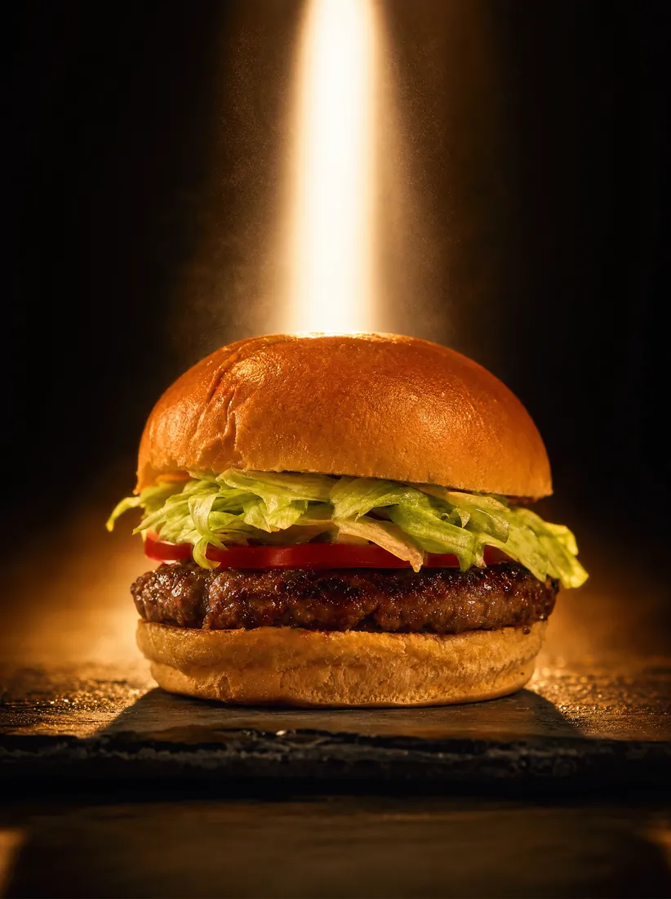
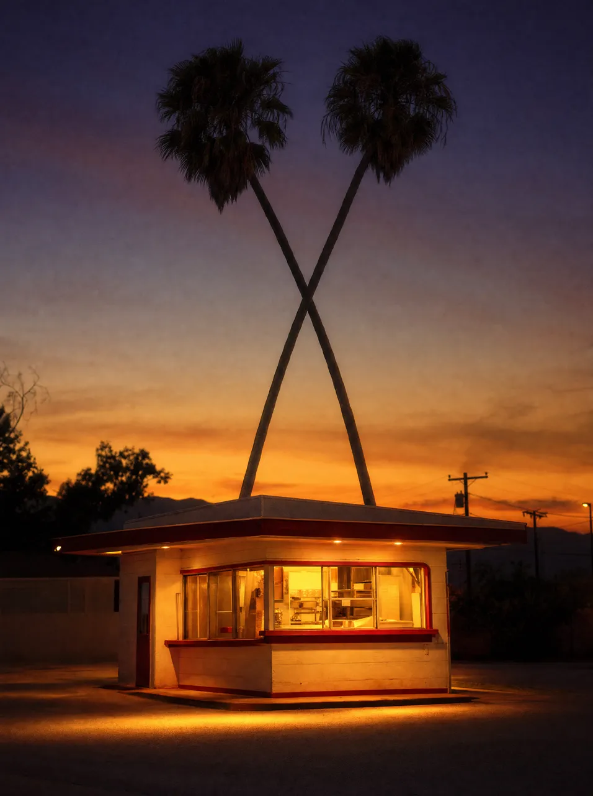
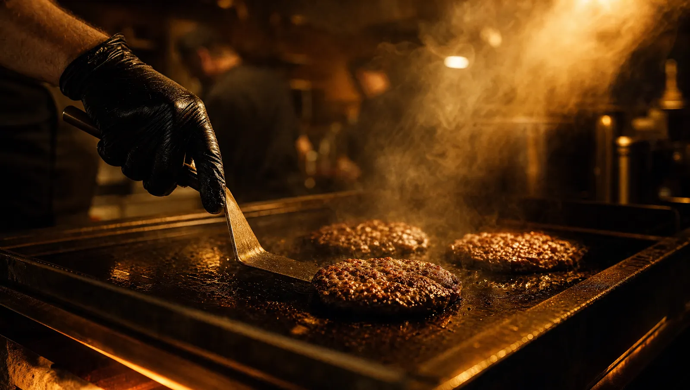
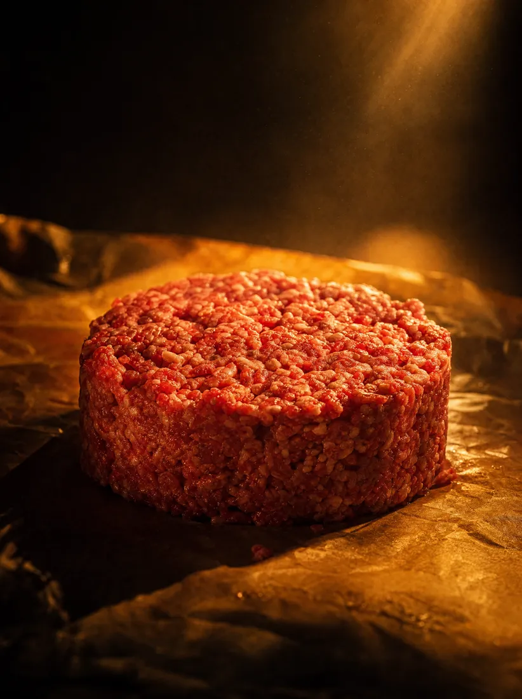
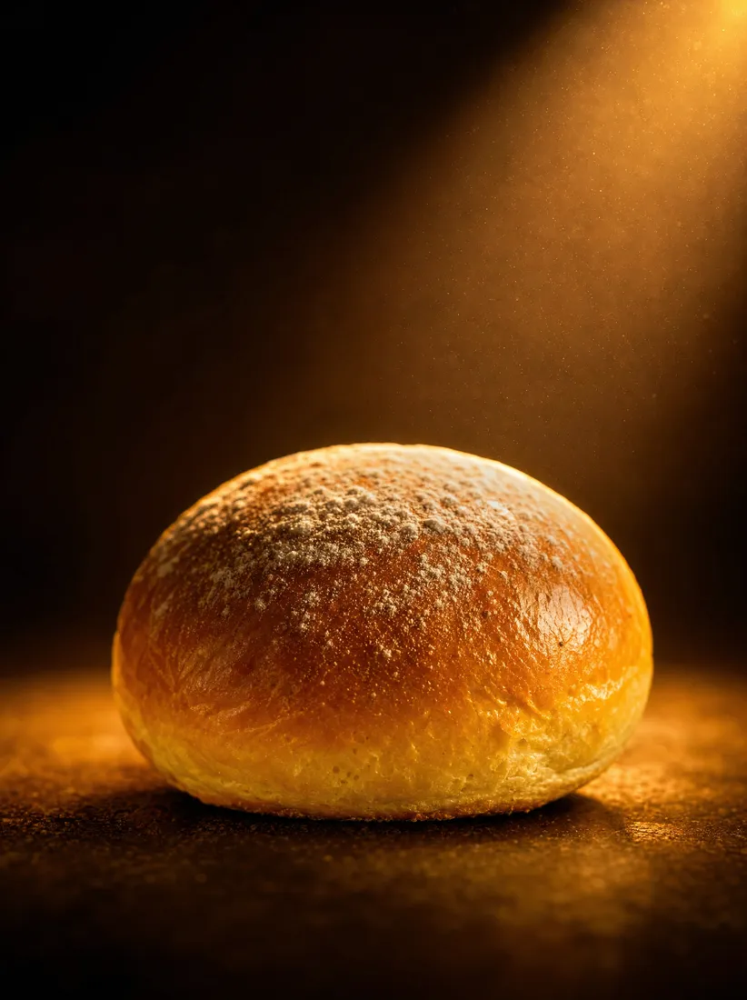
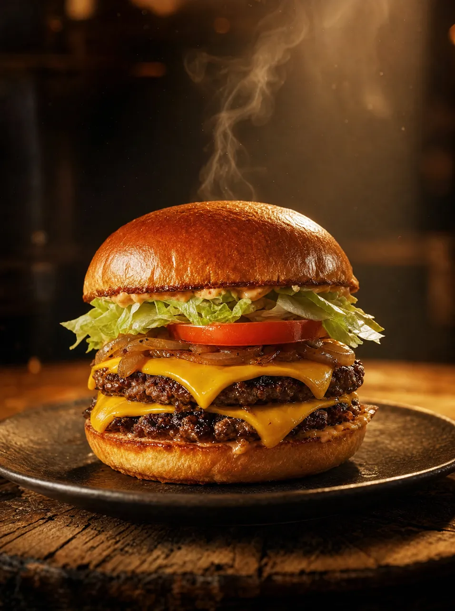
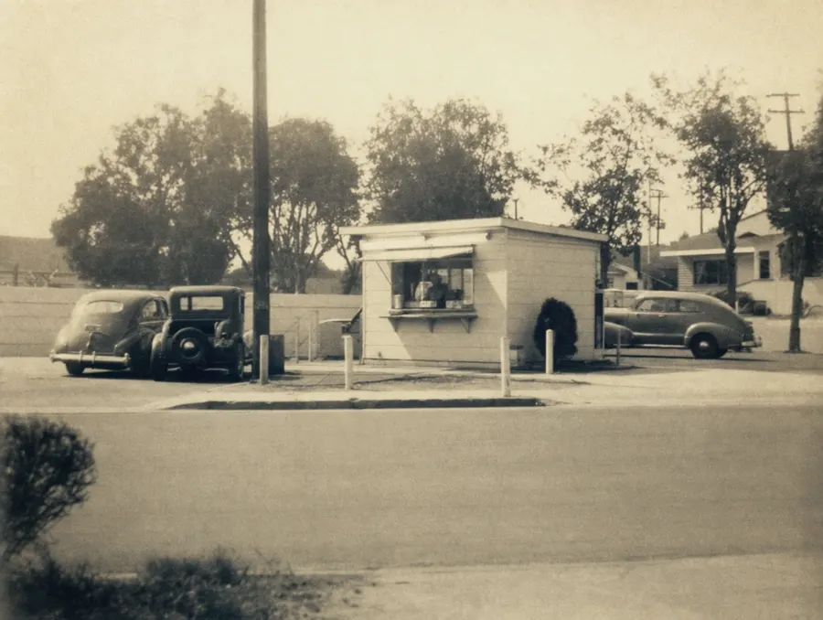
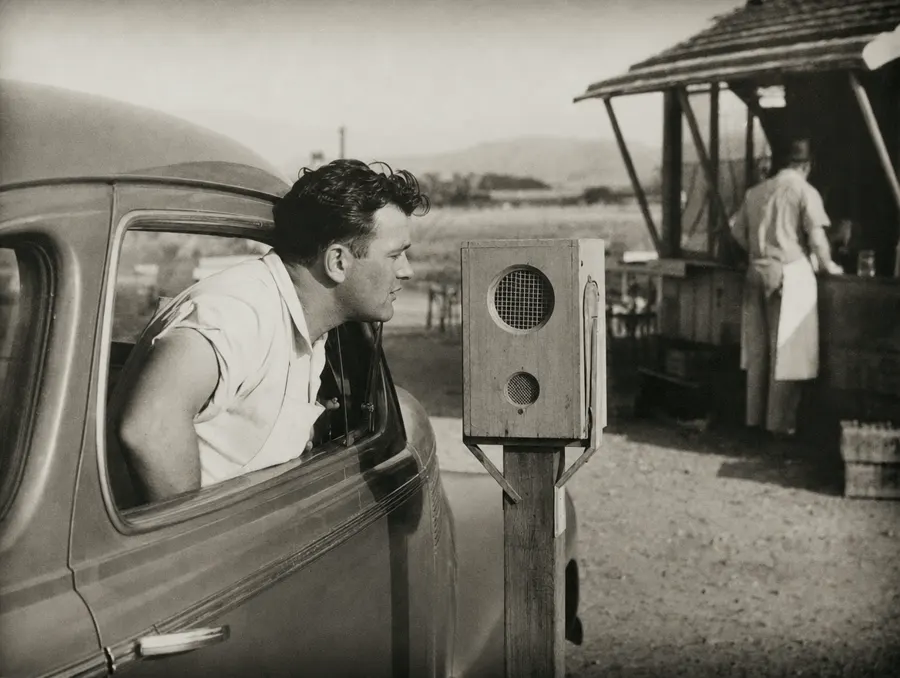
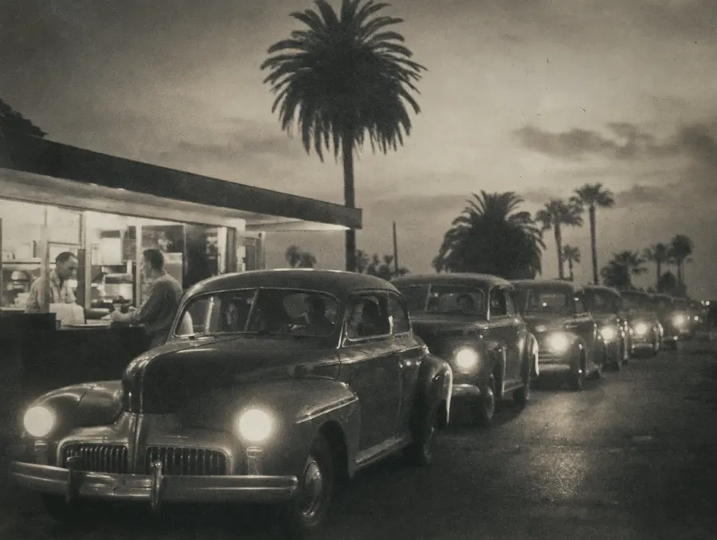

Hamburger
One patty, hand-leafed lettuce, tomato, spread.





Baldwin Park · 1948
The first drive-thru in California.
Held cold
No freezer in any store.
Pressed to order
It cooks once you have asked.
Flat top · 230°
Never before. Never for later.
100% American beef
From their own facilities.
Sponge dough
Toasted for every order.
Whole potatoes, a hand crank
Nothing between field and fryer.
Out of the oil
No heat lamp in the building.
Created in 1961, by customers
Mustard cooked, grilled onions.
Real American
The moment it leaves the steel.
The one thing they never sell
Extra, if you ask for it.
Layer by layer
While you wait in the car.
Six lines on the menu
Nothing on it was waiting.
That is the whole argumentNow build yours ↓
Their own words. Nothing here is secret, and nothing here is ordered.
Patties × cheese2 × 2
Harry Snyder built the speaker box in his garage so you would not have to leave the car.
A hundred square feet. Six lines on the menu. Zero freezers. One arrow, since 1954.

Francisquito and Garvey.

Built at night, in his garage.
He picked the produce himself.

1954. It points to pride.
We all work under the same arrow.
Unsolicited concept redesign, not affiliated with or endorsed by In-N-Out Burgers. Every figure, quotation and menu description is taken verbatim from in-n-out.com. Concept and build: Dondi Santeme, TheWebDesigner.